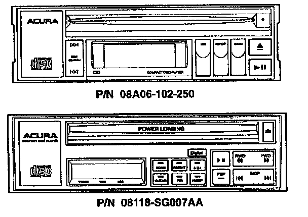
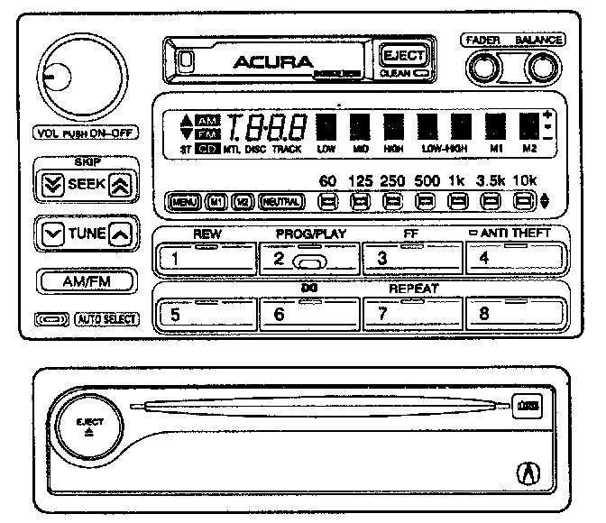

CD Player Upgrade Kit: Overview
November 11, 1997BULLETIN NO.
97-034
YEAR
1988-90
1987-90
MODEL
LEGEND 4-dr Std. & L
LEGEND 2-dr Std. & L
VIN APPLICATION
ALL
ALL
CD Player Upgrade Kit
PROBLEM

The accessory CD players shown are no longer repairable because parts are not available for them.
CORRECTIVE ACTION
On a customer-pay basis, a radio and CD player upgrade kit is available.

The upgrade kit includes a radio, CD player, CD player trim piece, antenna adapter, an anti-theft card, and an owner's manual.
NOTE
The radio is equipped with an anti-theft feature. Make sure you inform your customer of this feature.
EXCHANGE PROCEDURE
Have your parts manager fill out an Audio Diagnostics Form (E2201) and carefully pack it, along with a dealership check for $250, with the customer's CD player and radio in a box. Send it prepaid via UPS to:
Alpine Electronics
19145 Gramercy Place
Torrance, CA 90501
(800) 421-2284, ext. 8888
(800) 262-4150 (CA only)
Alpine will send the new CD player and radio to your dealership within five working days of receiving your package.